Flow นี้คือโหมดการขายที่ 5 (ADR-029) ต่อจาก บทที่ 14: ผลิตตามสั่ง (MRP) — เพิ่ม "สินค้าสำเร็จรูป" (FG, เช่น เคาน์เตอร์ท็อป) เป็นปลายทางที่ 2 ของแผ่นหิน นอกเหนือจากการขายแผ่นตรงๆ: 1 แผ่น (Slab) → N ชิ้น FG ผ่าน MRP byproduct ไม่ใช่อัตราส่วนตายตัว — คนหน้างานเป็นคนกรอกจริงตอนผลิตว่าตัดได้กี่ชิ้น ไม่ใช่ระบบคำนวณล่วงหน้า
ดู concept รวมทุกโหมดที่ บทที่ 13: Product Concepts — บทนี้ครอบคลุมเฉพาะขั้นตอนของโหมด 5 เท่านั้น ตัวอย่างทั้งหมดในบทนี้บันทึกจากการรันจริงบน mbx-ee-dev (2026-08-19) กับลูกค้าทดสอบ "Demo Customer - Mode 5 FG Production", ออเดอร์ S00034 (วัสดุ Carrara White, สินค้า Carrara White - Countertop) — เก็บไว้เป็น reference fixture เหมือนบทอื่นๆ ไม่ลบทิ้ง
กลไกหลัก
- บรรทัดขาย FG — ตรวจจับอัตโนมัติผ่าน field
stone_is_fgที่ตั้งไว้บน Product Template ของสินค้า FG (คู่กับFG Raw Materialที่ชี้กลับไปยัง Material ของแผ่นหินต้นทาง) - ระบบเช็คว่ามี Slab ของ Material เดียวกันว่างอยู่ในสต็อกไหม — ถ้ามี ใช้แผ่นนั้น (auto-match หรือเลือกเองผ่าน wizard) — ถ้าไม่มี cascade ไปที่ Mode 3 (Cut-to-Order) เพื่อตัดแผ่นใหม่จากก้อนก่อน แล้วค่อยกลับมาผลิต FG
- Output ของการผลิต FG ไม่ผูก Serial รายชิ้น — track เป็น Lot เดียวต่อรอบผลิต (batch qty) แม้จะได้ FG หลายชิ้นจากแผ่นเดียวกัน
- ต้นทุนค่าแรงเป็นอัตรามาตรฐานคงที่ต่อ Product Category (
FG Standard Labor Cost) ไม่คำนวณจากเวลาทำงานจริง
ขั้นตอน
1. เปิดบรรทัดขาย FG
Sales → New Quotation → เลือกลูกค้า → Add a product เลือกสินค้าที่ตั้ง stone_is_fg = True ไว้แล้ว (ตัวอย่างนี้ "Carrara White - Countertop") → ใส่ Quantity (จำนวนชิ้น FG ที่ต้องการ) → Save ก่อน เหมือนโหมดอื่น จะเห็นปุ่ม "Cut to Order" และ "Produce FG" โผล่คู่กันบนบรรทัดทันที (ทั้งคู่จำกัดสิทธิ์ไว้ที่กลุ่ม group_emgo_factory)
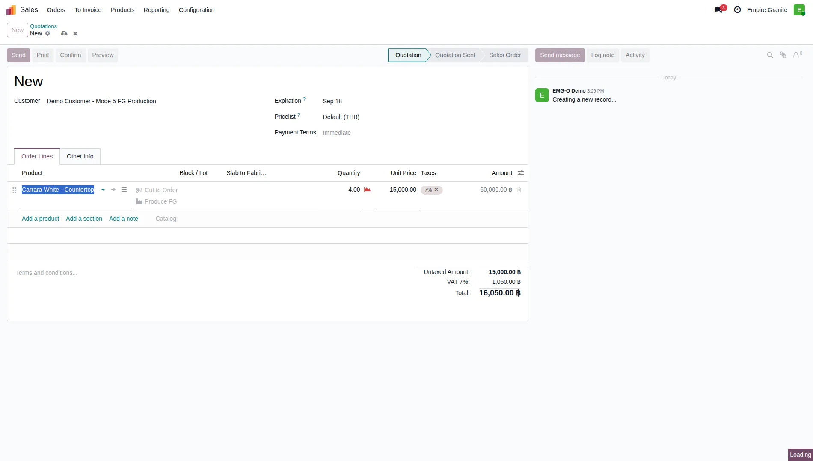
2. กด "Produce FG" — ถ้ามี Slab พร้อมอยู่แล้วในสต็อก
Wizard "Produce FG" จะเปิดขึ้น พร้อมเติม FG Raw Material ให้อัตโนมัติจาก Material ที่ตั้งไว้บนสินค้า FG นั้น และพยายาม auto-match Slab to Consume ให้ (ตาม Material เดียวกัน + สถานะ available) — ถ้าไม่มีแผ่นว่างเลย ช่องนี้จะว่างไว้ให้เลือกเอง
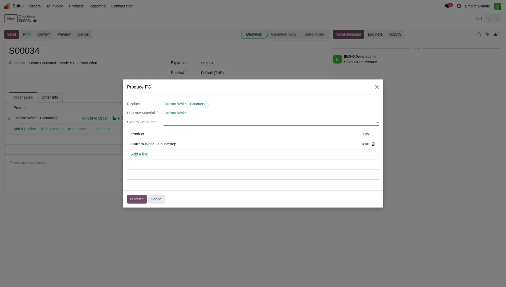
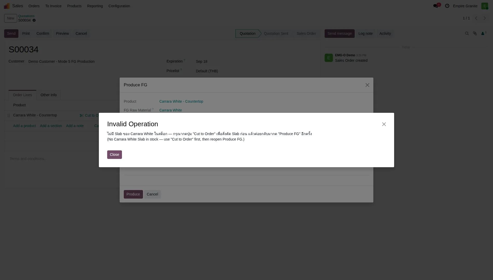
3. ถ้าไม่มี Slab — Cascade ไป Mode 3 (Cut to Order)
กด "Cut to Order" บนบรรทัดเดียวกัน — wizard "Create Cut Order" เปิดขึ้นแบบเดียวกับบทที่ 14ทุกประการ (Material เติมอัตโนมัติ, เลือก Cut From Block, ใส่ Target L/H) — จุดต่างที่สังเกตได้ทันที คือมีบล็อกใหม่โผล่ขึ้นมาชื่อ "NO SALE ORDER — AUDIT TRAIL" พร้อมช่อง Reason (No SO) และ Project (No SO)
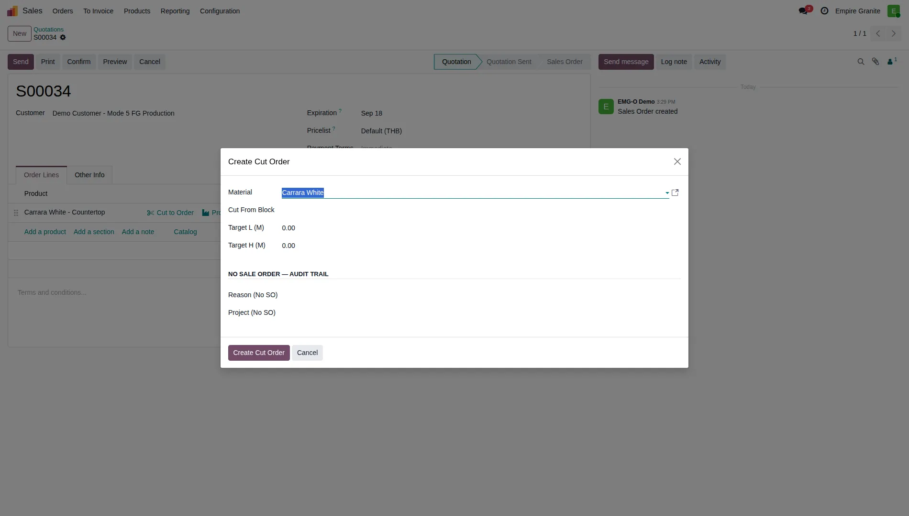
default_order_line_id ให้ wizard เหมือนตอนเปิดจากบรรทัดขายแผ่นตรงๆ — เพราะ Slab ที่ตัดออกมาไม่ได้ตั้งใจจะ hold ให้บรรทัดนี้ทันที (ต้องผ่าน Produce FG wizard มาเลือกอีกที) ผลคือ wizard เข้าเงื่อนไข "ไม่มี SO" และบังคับให้เลือก Reason (No SO) เสมอ (ตัวเลือก: ปกติ/งานเพิ่ม/ตัดซ่อม/อื่นๆ — ชุดเดียวกับที่ client ใช้ในเอกสารตัดกระดาษจริง) — เลือก "ปกติ (Normal, has SO)" สำหรับเคสนี้ เพราะที่จริงมันมี SO อยู่เบื้องหลัง (S00034) เพียงแต่ตัว Cut Order เองไม่รู้จักมันในระบบ4. ⚠️ ก่อนกด Create Cut Order — ต้องย้าย Block ไป Location "Stone Production" ก่อนเสมอ
กด Create Cut Order ตอนที่ Block ยังอยู่ที่ "Stone Available" จะเจอ Error ทันที:
"Block BLK-26-0001 ยังไม่ได้ย้ายไปสถานีตัด (Stone Production) เพียงพอ — ต้องการ 0.040 m³ แต่อยู่ที่สถานีตัดแล้วแค่ 0.000 m³ กรุณาสแกน/ย้าย Block ไปที่ Location 'Stone Production' ก่อน แล้วค่อยสร้าง Cut Order"
แก้โดยไปที่ Inventory → Operations → Internal Transfers → New: Source Location = Stone Inventory/Stone Available, Destination = Stone Inventory/Stone Production, Product = ตัว Block Product ของ Material นั้น (เช่น "Carrara White - Block"), ใส่จำนวน (m³) ที่พอสำหรับตัด → Mark as Todo → Validate
BDL-00002-BLK (คนละก้อนกับที่เลือกไว้ใน Cut Order wizard คือ BLK-26-0001) ให้เงียบๆ ถ้าไม่เช็คให้ดี Cut Order จะยัง Error "ไม่พอ" อยู่ดีเพราะก้อนที่ระบบเลือกให้ไม่ตรงกับก้อนที่ Cut Order ต้องการจริง
วิธีแก้: อย่ากด Validate ทันที — กด "Mark as Todo" ก่อน แล้วคลิกลิงก์ "Details" ข้างช่อง Quantity ของบรรทัดนั้น → ลบบรรทัด Pick From ที่ระบบเดาให้ → กด "Add a line" → หน้าต่างจะโชว์ quant แยกตาม Location/Lot จริง (แม้ชื่อ Location จะซ้ำกันแต่ตัวเลข On Hand ต่างกันตามก้อน) → เลือกแถวที่ตรงกับก้อนที่ต้องการจริง (สังเกต dropdown "Pick From" จะโชว์ชื่อ Lot ต่อท้าย เช่น "Stone Available - BLK-26-0001-BLK" หลังเลือกแล้ว) → Save → Validate
5. Cut Order สำเร็จ → เห็น Component Status = Available
กลับไปกด "Create Cut Order" อีกครั้ง (ค่าที่กรอกไว้ยังอยู่) — คราวนี้ผ่าน ระบบสร้าง MO (STCUT) พร้อม Confirm ให้อัตโนมัติ Component Status: Available และ field Reason (No SO) โชว์ค่าที่เลือกไว้
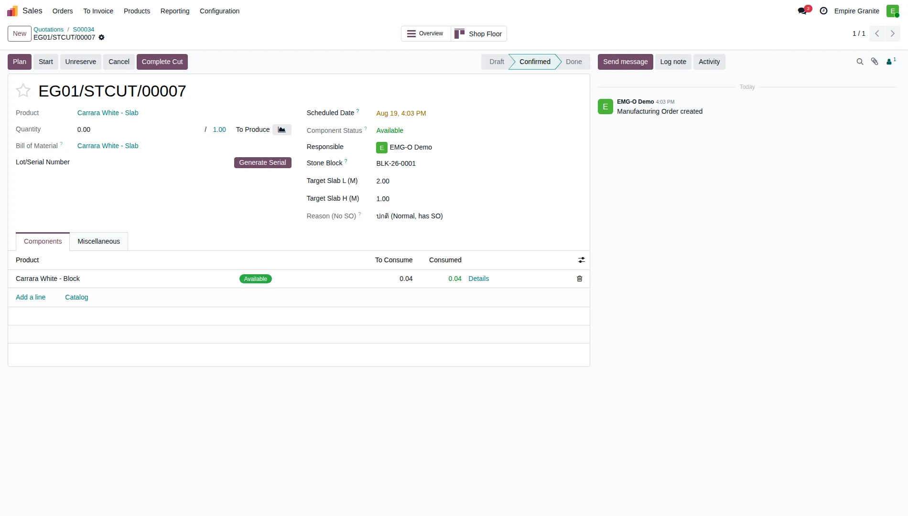
กด "Complete Cut" (ปุ่มเดียวกับ Mode 3) → MO เปลี่ยนเป็น Done พร้อมสร้าง Slab ใหม่ (Lot/Serial ใหม่ เช่น BLK-26-0001-1) เข้าระบบ
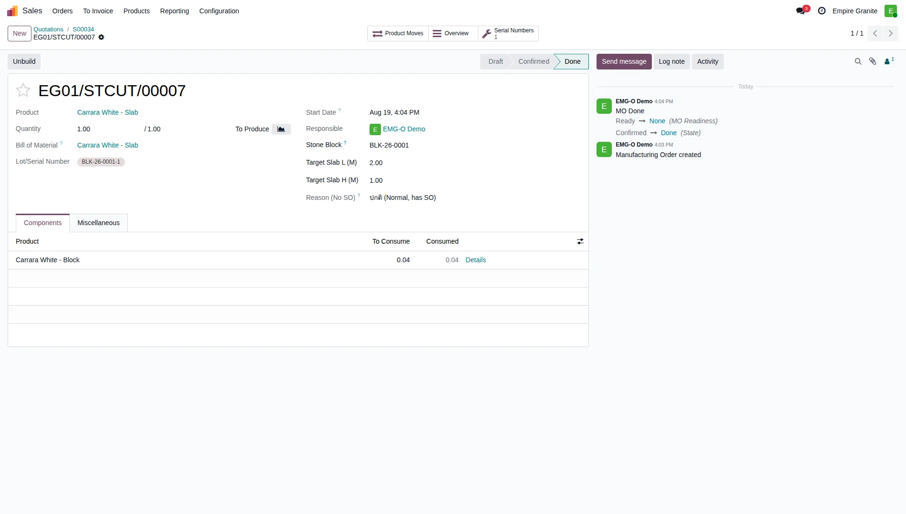
order_line_id ผูกไว้ตั้งแต่แรก (ดูกล่องคำเตือนข้อ 3) แผ่นใหม่นี้เลยจบด้วยสถานะ "available" เฉยๆ — ขั้นตอนถัดไปต้องกลับไปกด "Produce FG" อีกครั้งเพื่อดึงแผ่นนี้มาใช้ (ไม่ใช่บั๊ก เป็นการออกแบบตั้งใจ — ระบุไว้ตรงๆ ใน docstring ของโค้ด)6. ⚠️ Slab ใหม่ก็ต้องย้ายไป "Stone Production" อีกรอบ ก่อนจะ Produce FG ได้
Slab ที่เพิ่งตัดเสร็จจะไปอยู่ที่ "Stone Available" โดยอัตโนมัติ (ไม่ใช่ Stone Production) — ทำ Internal Transfer อีกรอบ (Source = Stone Available, Destination = Stone Production, Product = ตัว Slab Product เช่น "Carrara White - Slab") เพราะสถานีผลิต FG (เจาะ/ตัด/ขัดขอบ) ใช้สถานีเดียวกับสถานีตัด Block ตามที่ client ยืนยัน — Slab ที่ pricing_mode เป็น serial มีแค่ 1 ชิ้นต่อ Lot อยู่แล้ว จึงไม่มีปัญหาเลือกผิด Lot แบบ Block
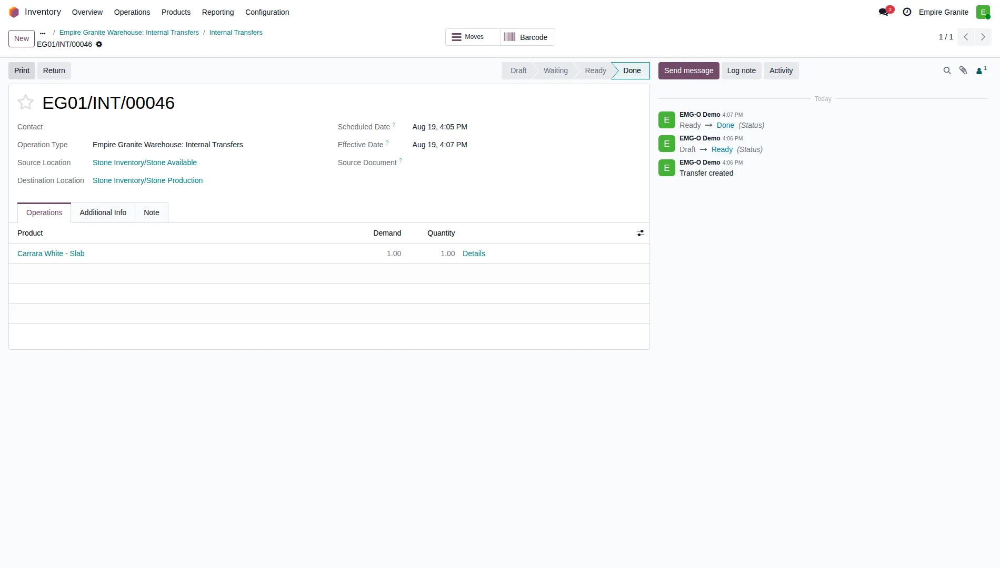
7. กลับไปกด "Produce FG" อีกครั้ง — คราวนี้ auto-match แผ่นให้เอง
เปิด wizard Produce FG จากบรรทัดขาย FG เดิม — "Slab to Consume" เติมชื่อแผ่นที่เพิ่งตัด+ย้ายเสร็จให้อัตโนมัติทันที (auto-match ตาม Material เดียวกัน + available + อยู่ที่ Stone Production แล้ว) — ตาราง FG Output ด้านล่างมีบรรทัดแรกเติมมาให้แล้วตรงกับสินค้า/จำนวนบนบรรทัดขาย (4 ชิ้น ในตัวอย่างนี้)
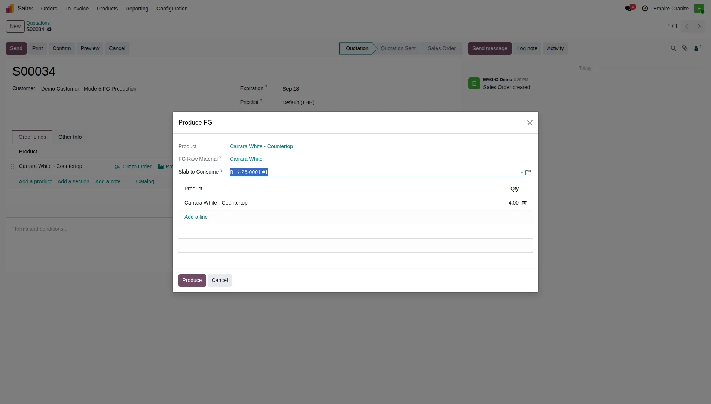
1 Slab → N ชิ้น FG (byproduct): ปุ่ม "Add a line" ในตารางนี้คือจุดที่รองรับ "1 แผ่น ตัดได้หลายชิ้น/หลายสินค้า FG" ตาม ADR-029 — เพิ่มบรรทัดใหม่เลือกสินค้า FG ตัวอื่น (ต้องตั้ง stone_is_fg = True ไว้เหมือนกัน) พร้อมจำนวนที่ตัดได้จริงจากแผ่นเดียวกัน กลไกข้างหลังคือสร้างเป็น byproduct move (move_finished_ids) เพิ่มเข้า MO หลัง confirm — ไม่ได้ผูกอัตราส่วนตายตัวไว้ในตัว BOM เลย (ตัวอย่างในบทนี้มีสินค้า FG ตั้งไว้แค่ตัวเดียวในระบบ demo ตอนบันทึก จึงมีแค่บรรทัดหลัก ไม่มี byproduct — แต่กลไก/ปุ่มมีอยู่จริงพร้อมใช้)
กด Produce → ระบบสร้าง Manufacturing Order ใหม่ (รหัสขึ้นต้น STFG, ต่างจาก STCUT ของ Mode 3) พร้อม Confirm ให้เสร็จในทีเดียว เห็น field "Slab Consumed (FG)" และ "For Sale Order Line" ชี้กลับไปหาบรรทัดขายต้นทาง (ครั้งนี้ผูกกลับจริง เพราะเปิดจาก Produce FG wizard ตรงๆ ไม่ใช่ cascade)
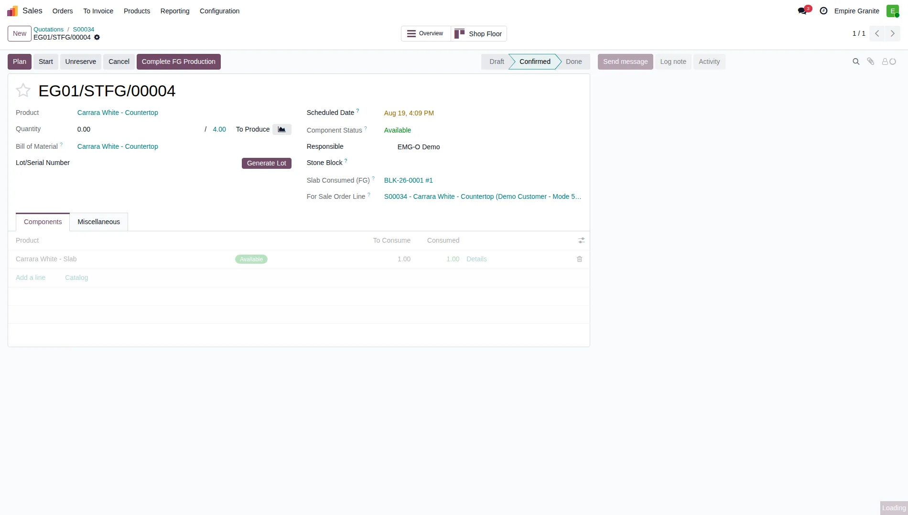
8. Complete FG Production → ได้ Lot เดียวคุม FG ทั้งชุด
กด "Complete FG Production" (ปุ่มเฉพาะของโหมดนี้ คู่กับ "Complete Cut" ของ Mode 3) → MO เปลี่ยนเป็น Done พร้อมสร้าง Lot/Serial Number ใหม่ 1 ตัว ครอบคลุม FG ทั้ง 4 ชิ้นที่ผลิตได้ (ชื่อ pattern FG-<เลข MO> เช่น FG-EG01/STFG/00004) — track เป็นล็อต ไม่ใช่ Serial รายชิ้น
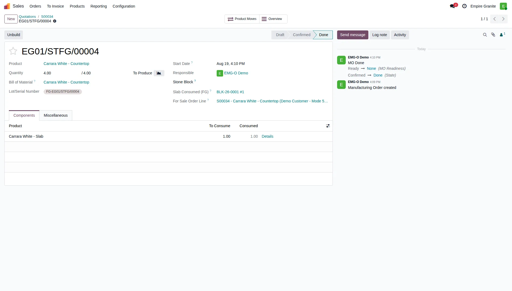
9. กลับไป Confirm SO ตามปกติ
กลับไปที่ Quotation ต้นทาง (breadcrumb) → กด Confirm → ระบบสร้าง Delivery Order ให้เหมือน flow ปกติทุกประการ (ไม่มีกลไกพิเศษแยกสำหรับ FG ตรงจุดนี้ — ใช้ sale_stock/native flow ล้วนๆ ตามที่ตั้งใจออกแบบไว้)
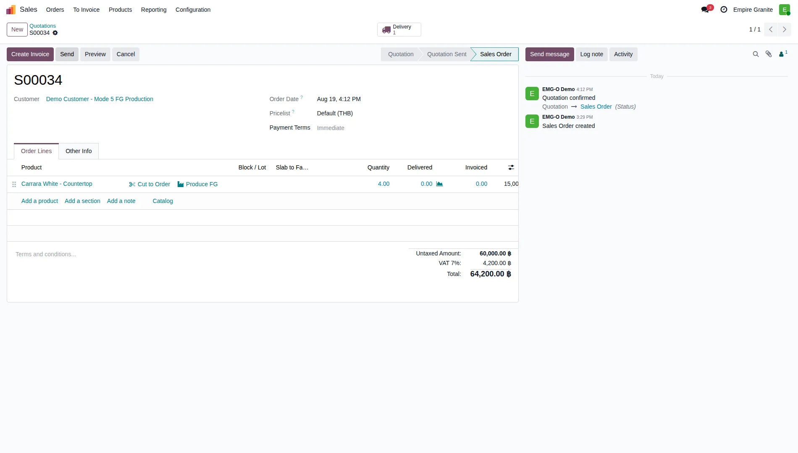
จากนี้ไปทำตาม บทที่ 06: ส่งของและยืนยันการรับ เหมือนโหมดอื่นได้เลย (สแกนยืนยัน → Validate Delivery → เซ็นรับของ)
ต้นทุนงานผลิต FG
ต้นทุนค่าแรงของงาน FG ไม่ได้คำนวณจากเวลาทำงานจริงเหมือน Mode 3 (workcenter cost/ชม. × duration) — เพราะร้านไม่มีกลไกจับเวลาการผลิต FG จริงต่อรอบ แทนที่ด้วยอัตรามาตรฐานคงที่ต่อ Product Category ตั้งค่าที่ Inventory → Configuration → Product Categories → (เลือก Category ของสินค้า FG) → field "FG Standard Labor Cost" — คูณกับจำนวนที่ผลิตได้จริง (qty_producing) แล้ว tag เป็นรายการต้นทุนลบเข้า Analytic Account ของบรรทัดขายนั้น (ต่อ percentage การกระจาย ถ้าตั้งไว้) ตอนกด Complete FG Production — รูปแบบเดียวกับที่ Mode 3 tag ค่าแรงตัด แค่เปลี่ยนแหล่งตัวเลขจาก workcenter×เวลา มาเป็น rate คงที่
Product Category เดียวกันนี้ยังมีแท็บ "FG Production Operations" ให้กำหนดลำดับขั้นตอนงาน (เช่น Cutting → Polishing → Edge) ที่ FG หมวดนั้นต้องผ่าน — คัดลอกเข้า BOM Operation ให้อัตโนมัติตอนสร้าง Cut Order/FG Production ครั้งแรกของหมวดนั้น
BLK-26-0001 (ก้อนที่ใช้ตัดในตัวอย่างนี้) ไม่ได้ผูก Analytic Account ไว้ (ไม่ใช่ก้อนที่ tag เข้าโครงการใดโครงการหนึ่ง) ทำให้บรรทัดขาย S00034 ไม่มี analytic_distribution ให้ tag ต้นทุนไปลง — กลไก tag labor cost มี guard if not distribution: return เพื่อกันการสร้างรายการ Analytic ที่ไม่มีปลายทาง เหมือนกับที่ Mode 3 ก็ skip เงื่อนไขเดียวกันถ้า Block ไม่มี Analytic Account — ถ้าต้องการเห็นต้นทุนค่าแรง FG ขึ้นจริง ต้องผูก Analytic Account ให้ Block ต้นทางก่อน (ดู บทที่ 12: กำไรรายโครงการ)ข้อจำกัดที่ทราบ (Known Limitations)
ข้อจำกัดอื่นที่ทราบ ณ วันที่เขียนบทนี้ (2026-08-19):
- Internal Transfer ของ Block ไม่มี Lot picker ในหน้า UI ปกติ (ดูกล่องเตือนข้อ 4 ด้านบน) — ต้องผ่าน "Details" popup เสมอถ้า Material นั้นมีมากกว่า 1 ก้อน/Block ไม่งั้นเสี่ยงย้ายผิดก้อนแบบเงียบๆ
- Matching เกณฑ์แค่ Material เดียว (v1) — wizard ไม่เช็ค Thickness/Finish ตอน auto-match แผ่นให้ FG (ต่างจาก Cut Order ที่มี soft-warning เตือนเรื่อง Finish) — ถ้า Material เดียวกันมีหลาย Finish ปนกัน ต้องเลือก Slab เองด้วยมือให้ตรง อย่าพึ่ง auto-match เสมอไป
- Workcenter ใช้สถานีร่วมกับ Mode 3 — Slab ต้องอยู่ที่ Location "Stone Production" เดียวกับที่ Block ใช้ตัด (ไม่มีสถานีแยกสำหรับงาน FG โดยเฉพาะ) ตามที่ client ยืนยันเรื่องหน้างานจริง